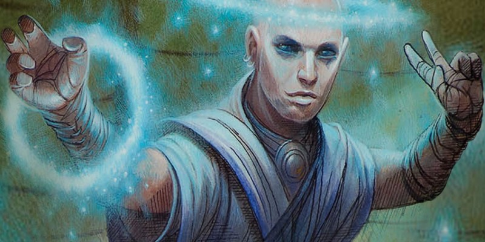

Sous-classes psioniques (v1)
Cet Unearthed Arcana propose de nouvelles options de sous-classes :
- Guerrier psi (guerrier)
- Coutelâme (roublard)
- Psioniques (magicien)
Ainsi que de nouveaux sorts et de nouveaux dons.
Archétype martial
Au niveau 3, un guerrier gagne la capacité Archétype martial. Voici une nouvelle option d'archétypes : le guerrier psi.
Guerrier psi
Sensible et éveillé aux pouvoirs psioniques, un guerrier psi est en fait un guerrier qui augmente et renforce sa puissance et ses performances physiques à l'aide de frappes d'armes imprégnées psychiquement, de coups de fouet télékinétiques ou de barrières de force mentale. Peut-être avez-vous développé ces capacités par vous-même en vous imposant une pratique régulière et une discipline de fer, ou avez-vous découvert vos compétences psychiques offensives ou défensives sous la tutelle d'un maître ou dans une académie dédiée à l'utilisation de ces pouvoirs de l'esprit.
Renforcement psionique
Capacité de guerrier psi de niveaux 3 et 10
Vous pouvez canaliser votre pouvoir psychique pour augmenter magiquement vos prouesses martiales. Lorsque vous terminez un repos long, choisissez de renforcer vos défenses ou vos attaques. L'avantage retenu dure jusqu'à la fin de votre prochain repos long.
Défenses renforcées. Lorsque vous, ou une créature que vous pouvez voir autour de vous dans un rayon de 9 mètres, subissez des dégâts, vous pouvez utiliser votre réaction pour lancer un d10 et réduire d'autant le nombre de dégâts subis. Lorsque vous atteignez le niveau 10 de cette classe, l'absorption des dégâts passe à un d12.
Attaques renforcées. À chacun de vos tours de jeu lorsque vous touchez une créature lors d'une attaque avec une arme, vous infligez 1d4 dégâts psychiques supplémentaires à cette cible. Lorsque vous atteignez le niveau 10 de cette classe, les dégâts psychiques supplémentaires passent à 1d6.
Main télékinétique
Capacité de guerrier psi de niveau 3
Vous apprenez le sort mineur main de mage. Vous pouvez lancer ce sort sans composantes et rendre la main spectrale invisible. L'Intelligence est votre caractéristique d'incantation pour ce sort.
Force de l'esprit
Capacité de guerrier psi de niveau 7
Au prix d'une action bonus, vous pouvez fouetter télékinétiquement une créature que vous pouvez voir à 6 mètres ou moins de vous. La cible doit effectuer un jet de sauvegarde de Force opposé à un DD égal à 8 + votre bonus de maîtrise + votre modificateur d'Intelligence. En cas d'échec, la cible subit des dégâts de force égaux à 2d6 + votre modificateur d'Intelligence. Elle est également télékinétiquement déplacée de 4,50 mètres vers vous ou à l'opposé de vous, selon votre choix. En cas de réussite au jet de sauvegarde, la créature ne subit que la moitié des dégâts et n'est pas déplacée. Vous pouvez utiliser cette capacité un nombre de fois égal à votre modificateur d'Intelligence (minimum une fois) et récupérerez toutes les utilisations dépensées à la fin d'un repos long.
Barrière télékinétique
Capacité de guerrier psi de niveau 10
Lorsque vous utilisez l'action Attaquer, vous pouvez renoncer à l'une de vos attaques pour projeter une barrière de puissance psionique dans un rayon de 3 mètres autour de vous. Cette protection dure 1 minute ou jusqu'à ce que vous soyez incapable d'agir. Pendant tout ce temps, vous et vos alliés dans cette zone bénéficiez des avantages d'un abri partiel (50 %) et avez un avantage aux jets de sauvegarde basés sur la Force. Une fois que vous avez utilisé cette capacité, vous ne pouvez plus y faire appel tant que vous n'avez pas terminé un repos long ou utilisé votre capacité Second souffle.
Frappe terrassante
Capacité de guerrier psi de niveau 15
Vos attaques peuvent canaliser une sorte de peur psychique. Lorsque vous touchez une créature lors d'une attaque avec une arme, vous pouvez lui infliger 2d10 dégâts psychiques supplémentaires et l'obliger à effectuer un jet de sauvegarde de Constitution contre DD égal à 8 + votre bonus de maîtrise + votre modificateur d'Intelligence. À moins que la sauvegarde ne réussisse, la cible tombe au sol et souffre d'un désavantage à ses jets de caractéristique jusqu'à la fin de votre prochain tour. Vous pouvez utiliser cette capacité un nombre de fois égal à votre modificateur d'Intelligence (minimum une fois) et récupérerez toutes les utilisations dépensées à la fin d'un repos long.
Imprégnation psionique
Capacité de guerrier psi de niveau 18
Le pouvoir de votre esprit imprègne tout votre être, ce qui fait de vous une force presque impossible à arrêter sur le champ de bataille. En utilisant votre réaction lorsque vous subissez des dégâts, vous pouvez bénéficier des avantages suivants pendant 1 minute ou jusqu'à ce que vous soyez incapable d'agir :
- Au début de chacun de vos tours, vous récupérez 10 points de vie.
- Votre vitesse de déplacement augmente de 3 mètres.
- Si vous êtes à terre, vous pouvez vous relever en dépensant 1,50 mètre de mouvement.
Une fois que vous avez activé cette capacité, vous ne pouvez plus l'utiliser avant de terminer un repos long.
Archétype de roublard
Au niveau 3, un roublard gagne la capacité Archétype de roublard. Voici une nouvelle option d'archétype : le coutelâme.
Coutelâme
En tant que coutelâme, vos capacités psioniques ont marqué ou jalonné votre enfance de manifestations ponctuelles involontaires parfois très démonstratives, ne révélant leur véritable potentiel que lorsque vos couteaux psychiques sont apparus. Vous avez peut-être recherché un ordre d'assassins psioniques reclus ou passé des années à apprendre à manifester vos lames mortelles auprès d'un maître coutelâme. Un coutelâme possède un puissant potentiel psionique. Ces adeptes concentrent leur énergie psychique dans des lames tangibles d'énergie pure, frappant l'esprit de leurs victimes. Ils trouvent facilement un emploi en tant que membres des guildes de voleurs et sont particulièrement recherchés en tant qu'assassins, leurs lames psychiques si particulières ne laissant aucune blessure visible.
Lame psychique
Capacité de coutelâme de niveau 3
Au prix d'une action bonus, vous pouvez créer une lame psychique chatoyante d'essence magique qui apparaît dans le prolongement de l'une de vos mains ou des deux. Lorsque qu'une de vos mains présente une lame, vous ne pouvez pas l'utiliser pour tenir autre chose. Vous pouvez faire disparaître une ou les deux lames à tout moment sans que cela ne vous coûte aucune action. La ou les lames disparaissent si vous êtes incapable d'agir.
La lame créée est une arme courante de corps à corps qui possède les propriétés finesse, légère et lancer. Elle inflige 1d6 dégâts psychiques et si vous la lancez, sa portée nominale est de 9 m et portée maximale est de 18 m. Si vous lancez la lame au cours d'une attaque, elle disparaît immédiatement après avoir touché ou raté sa cible. La lame disparaît quoi qu'il en soit à l'instant où elle quitte votre main.
Amélioration psionique
Capacité de coutelâme de niveau 3
Vous pouvez concentrer votre pouvoir psionique pour vous doter de capacités extraordinaires. Lorsque vous terminez un repos long, vous bénéficiez de l'un des avantages suivants de votre choix, qui dure jusqu'à ce que vous finissiez un autre repos long :
- Vous pouvez communiquer par télépathie avec toute créature que vous pouvez voir à 9 mètres ou moins de vous. Si une créature parle au moins une langue, elle peut vous répondre par télépathie.
- Augmentez votre vitesse de marche de 1,50 mètre.
- Vos points de vie maximum et vos points de vie actuels augmentent d'un montant égal à votre modificateur d'Intelligence plus votre niveau de voleur.
Lame terrifiante
Capacité de coutelâme de niveau 9
Vos lames psychiques peuvent désormais susciter la terreur chez une cible : lorsque vous infligez des dégâts à une créature avec votre Lame psychique, vous pouvez la forcer à effectuer un jet de sauvegarde de Sagesse contre un DD égal à 8 + votre bonus de maîtrise + votre modificateur d'Intelligence. En cas d'échec, la créature est effrayée jusqu'au début de votre prochain tour. En cas de réussite, la créature n'est pas effrayée et est immunisée pour les 24 heures suivantes contre votre Lame terrifiante.
Voile psychique
Capacité de coutelâme de niveau 13
Vous pouvez tisser et vous envelopper dans un voile d'énergie psionique afin de dissimuler votre présence physique. Par une action, vous pouvez alors devenir invisible magiquement, avec tout ce que vous portez ou transportez, pendant 10 minutes. Cette invisibilité prend fin si vous effectuez une attaque ou si vous forcez une créature à effectuer un jet de sauvegarde. Vous pouvez utiliser cette capacité un nombre de fois égal à votre modificateur d'Intelligence (minimum une fois), et récupérerez toutes les utilisations dépensées lorsque vous terminez un repos long.
Esprit déchiré
Capacité de coutelâme de niveau 17
Vous pouvez frapper directement de votre Lame psychique l'esprit d'une créature. Par une action si vous avez au moins une Lame psychique présente, vous pouvez forcer une créature que vous pouvez voir à 9 mètres ou moins de vous à effectuer un jet de sauvegarde d'Intelligence contre un DD égal à 10 + votre bonus de maîtrise + votre modificateur d'Intelligence. Si vous êtes caché de la cible, celle-ci a un désavantage au jet de sauvegarde. En cas d'échec, la cible subit 12d6 dégâts psychiques et est étourdie jusqu'au début de votre prochain tour. En cas de réussite, la cible ne subit que la moitié des dégâts et n'est pas étourdie. L'une de vos Lames psychiques disparaît après avoir utilisé cette capacité.
Vous pouvez utiliser cette capacité un nombre de fois égal à votre modificateur d'Intelligence (minimum une fois) et retrouvez toutes les utilisations dépensées lorsque vous terminez un repos long.
Tradition arcanique
Au niveau 2, un magicien gagne la capacité Tradition arcanique. Voici une nouvelle option de tradition : les psioniques.
Psioniques
Les magiciens étudient les pouvoirs magiques sous toutes leurs formes, y compris la magie psionique. Les magiciens qui suivent la tradition des psioniques exploitent le potentiel magique de leurs propres esprits. Parfois appelés psionistes ou mentalistes, ces magiciens interagissent avec le multivers au travers du prisme de leurs aptitudes et de leur conscience psionique. Les psionistes canalisent leur magie en concentrant leurs esprits. Ce faisant, ils peuvent transcender leur corps physique, adopter des formes de pensée pure, lancer des sorts à l'aide de leur seule puissance mentale pour se passer de composantes, et percevoir le monde avec un plus grand éventail de sens.
Votre histoire personnelle vous a peut-être conduit à éveiller votre esprit par le biais de vos études ésotériques. Ou bien encore peut-être avez rejoint un ordre de mentalistes qui vous ont montré la voie pour libérer en vous la magie psychique.
Focaliseur psionique
Capacité de psioniques de niveau 2
VOTRE FOCALISEUR PSIONIQUE
Chaque membre de la tradition des psioniques possède une histoire sur la manière dont son focaliseur psionique est entré dans sa vie. Imaginez comment vous avez trouvé le vôtre et de quelle manière cela s'est inscrit dans votre histoire personnelle.
L'événement qui a attiré votre attention sur vos capacités psioniques a probablement une signification personnelle. Votre maître vous l'a-t-il donné à la fin de votre apprentissage ? Vous a-t-il été décerné lorsque vous avez terminé vos études à l'académie de magie ? Votre regard et votre attention ont-ils été intensément aiguisés dans une boutique ou dans une bijouterie ? Était-ce associé au moment où vos pouvoirs psioniques se sont manifestés pour la première fois ? Un matin, vous êtes-vous réveillé avec l'objet bourdonnant sous votre oreiller ? Il vous appartient également de définir la forme de votre focaliseur psionique, probablement liée à l'apparition de votre magie, à un symbole de votre propre psyché ou à un objet que vous utilisez pour vous concentrer ou focaliser vos pensées. Il s'agit donc d'un objet portable qui a une signification particulière pour vous, mais qui ne peut pas être une arme ou un objet magique. C'est peut-être un objet ancien ou un jouet de votre enfance, le crâne d'une créature mystérieuse, un cristal qui vous provoquerait de l'attirance par certains côtés, une pièce de monnaie qui ne tomberait que sur le bord, une tablette brûlée par le feu ou toute autre relique personnelle et énigmatique.
Quoi qu'il en soit, votre focaliseur psionique vous est propre et vous appartient désormais, à vous de décider comment le gérer. L'insérerez-vous sur une baguette ou un bâton ? Préférez-vous le porter sur un collier, une bague, un serre-tête ou un bandeau ? L'avez-vous incrusté dans la couverture de votre livre de sorts ? Où que vous vous trouviez, vous pouvez maintenant canaliser votre magie psionique à travers lui, et il est un signe de votre appartenance à la vénérable tradition des psioniques.
Vous avez appris à canaliser l'énergie psionique au travers d'un objet spécial : un focaliseur psionique. Vous gagnez l'objet en même temps que cette capacité (voir l'encadré « Votre focaliseur psionique » pour savoir comment vous avez pu acquérir l'objet). Bien que votre concentration psionique émane de vous et de personne d'autre, vous bénéficiez des avantages suivants :
- L'objet est pour vous un focaliseur de sorts.
- Quand vous lancez les dégâts psychiques ou de force de l'un de vos sorts de magicien, vous pouvez relancer les dés ayant un résultat de 1 et alors utiliser les nouveaux résultats.
Si vous perdez votre focaliseur psionique, vous pouvez le recréer magiquement en méditant pendant 1 heure à l'occasion d'un repos court ou long au terme duquel le focaliseur réapparaîtra dans votre main.
Dévotion psionique
Capacité de psioniques de niveau 2
Votre étude des pouvoirs psioniques accroît peu à peu le potentiel de votre esprit. Lorsque vous obtenez cette capacité, choisissez l'un des sorts mineurs suivant : amis, main de mage ou message. Vous apprenez ce sort mineur supplémentaire si vous ne le connaissez pas déjà et il ne compte pas dans le nombre total de sorts mineurs qui vous sont octroyés selon votre niveau. Tant que vous portez votre focaliseur psionique sur vous, vous pouvez utiliser le sort mineur choisi au prix d'une action bonus sans avoir besoin d'aucune composante, et avec les modifications décrites ci-dessous :
Amis. À la fin du sort, la cible ne devient pas hostile à votre encontre.
Main de mage. Vous pouvez rendre la main invisible lorsque vous lancez le sort et vous la contrôlez au prix d'une action bonus.
Message. Vous n'avez pas besoin de pointer la cible ni de murmurer votre message à voix haute.
Forme spirituelle
Capacité de psioniques de niveau 6
Tant que vous portez votre focaliseur psionique sur vous, vous pouvez utiliser une action bonus pour transformer votre corps en énergie psionique pure. La transformation dure 10 minutes, jusqu'à ce que vous utilisiez une action bonus pour reprendre votre forme normale, ou jusqu'à ce que vous soyez incapable d'agir ou mort. Sous forme spirituelle, vous apparaissez sous la forme d'une pure énergie psychique lumineuse dans laquelle se concentre votre essence psionique. Votre avatar peut prendre la forme que vous souhaitez, mais il est évidemment magique, de la même taille que vous et diffuse une lumière faible dans un rayon de 1,50 mètre. Tout autre équipement que vous portez ou transportez fusionne avec votre forme spirituelle. Dans cet état, vous bénéficiez également des avantages suivants :
Incantation psionique. Lorsque vous lancez un sort alors que vous êtes sous forme spirituelle, vous pouvez le lancer avec la force de votre esprit. Dans ce cas, le sort n'exigera pas de composantes verbales, somatiques ou matérielles avec un coût en or.
Résilience psychique. Vous bénéficiez de la résistance aux dégâts psychiques ainsi qu'aux dégâts contondants, perforants et tranchants causés par des attaques non magiques.
Vous pouvez vous transformer en utilisant cette capacité un nombre de fois égal à votre modificateur d'Intelligence (minimum une fois) et récupérerez toutes les utilisations dépensées à la fin de votre prochain repos long.
Discipline mentale
Capacité de psioniques de niveau 10
Le pouvoir de votre esprit se renforce et prend de la hauteur. Lorsque vous obtenez cette capacité, choisissez l'un des sorts de niveau 5 suivant : domination de personne, scrutation ou télékinésie. Vous pouvez ajouter le sort à votre livre de sorts et le lancer sans composantes. Vous pouvez également lancer le sort choisi une fois sans utiliser d'emplacement de sort. Après cela, vous devez terminer un repos long avant de pouvoir relancer le sort de cette manière.
Renforcement psionique
Capacité de psioniques de niveau 10
Lorsque vous infligez des dégâts psychiques ou de force à l'aide d'un sort de magicien, vous pouvez ajouter votre modificateur d'Intelligence aux dommages infligés à l'une des cibles du sort.
Transplaner
Capacité de psioniques de niveau 14
Lorsque vous utilisez votre Forme spirituelle, vous bénéficiez d'une vitesse de vol égal à votre vitesse de marche, avec vol stationnaire, et vous pouvez vous déplacer à travers d'autres créatures et objets comme s'il s'agissait d'un terrain difficile. Vous subissez néanmoins 1d10 dégâts de force si vous terminez votre tour à l'intérieur d'un objet. Si vous revenez à votre forme normale lorsque vous êtes à l'intérieur d'un objet, vous êtes déplacé vers l'espace inoccupé le plus proche et subissez 1d10 dégâts de force par tranche de 1,50 mètre parcourue.
Origines magiques d'ensorceleur
Au niveau 1, un ensorceleur gagne la capacité Origine magique. Voici de nouvelles options d'origines :
Esprit aberrant
UNE PERTURBATION UNIQUE
Quelle que soit sa genèse, l'origine de l'esprit aberrant confère au personnage ou à son environnement une impression de peur. Cela peut être subtil, comme lorsque l'ensorceleur lit l'esprit d'une créature avec détection des pensées et que toutes les personnes proches de lui éprouvent un sentiment d'effroi faible mais omniprésent. Ou cela peut être évident, comme lorsqu'il transpire un voile de mucus visqueux quand il a peur, ou lorsque ses pupilles se tortillent quand il est excité.
Pensez à la source potentiellement innommable des pouvoirs de votre ensorceleur et utilisez-la comme guide pour tisser le mystère qui entoure sa magie.
Une influence d'un autre plan vous a enveloppé, déformant à la fois votre corps et votre esprit. Ce peut être un éclat psychique qui s'est logé dans votre psychisme suite à la domination d'un aboleth. Peut-être êtes-vous né dans un endroit qui portait des traces du Royaume lointain et cela vous a changé à tout jamais. Ou des flagelleurs mentaux vous ont peut-être kidnappé, vous soumettant au processus cauchemardesque de la cérémorphose ; la transformation a échoué mais vous ne vous en êtes pas sorti indemne.
Pensées invasives
Au niveau 1, vous pouvez utiliser une action bonus pour créer magiquement un lien télépathique avec une créature visible à 18 mètres ou moins de vous. Tant qu'il est actif, vous pouvez parler par télépathie à la cible par le biais de ce lien, et si elle comprend au moins une langue elle peut vous parler par télépathie. Le lien dure 10 minutes ou prend fin avant si vous êtes incapable d'agir, si vous mourez ou si vous utilisez une autre action bonus pour rompre le lien ou pour établir ce lien avec une autre créature.
Sorts psioniques
À partir du niveau 1, votre nature aberrante change votre esprit de manière subtile mais profonde. Vous apprenez des sorts supplémentaires lorsque vous atteignez certains niveaux de cette classe, comme indiqué dans le tableau ci-dessous. Ces sorts sont considérés comme des sorts d'ensorceleur pour vous, mais ils ne sont pas comptabilisés dans le nombre de sorts que vous connaissez. Ces sorts ne peuvent pas être remplacés lorsque vous gagnez un niveau dans cette classe.
| Niveau d'ensorceleur |
Sorts |
| 1 | tentacules de Hadar, murmures dissonants |
| 3 | apaisement des émotions, détection des pensées |
| 5 | voracité de Hadar, communication à distance |
| 7 | compulsion, tentacules noirs d'Evard |
| 9 | modification de mémoire, lien télépathique de Rary |
Être déformé
RAPPEL DES RÈGLES : LES CALCULS DE CA NE SE CUMULENT PAS
Lorsque le jeu vous donne plus d'une façon de calculer votre Classe d'Armure, vous ne pouvez en utiliser qu'une. Vous choisissez toutefois celle que vous voulez utiliser. Par exemple, si vous avez la capacité Être déformé de l'esprit aberrant et la capacité Défense sans armure du moine, vous ne les ajoutez pas l'une à l'autre. Au lieu de cela, choisissez la règle qui détermine votre CA.
À partir du niveau 1, votre origine aberrante vous protège du mal. Votre corps est recouvert d'une couche de vase visqueuse, d'une peau dure, d'écailles ou d'une barrière psionique invisible (choisissez la forme de protection lorsque vous gagnez cette capacité). Quelle que soit la forme que prend la protection, votre CA est égale à 13 + votre modificateur de Dextérité tant que vous ne portez pas d’armure.
Sorcellerie psionique
À partir du niveau 6, lorsque vous lancez un sort que vous avez gagné grâce à la capacité Sorts psioniques, vous pouvez le lancer normalement en utilisant un emplacement de sort ou bien en dépensant un nombre de points de sorcellerie égal au niveau du sort. Si vous lancez le sort en utilisant des points de sorcellerie, il ne nécessite aucun composant.
Défenses psychiques
Au niveau 6, vous gagnez la résistance contre les dégâts psychiques, et avez un avantage aux jets de sauvegarde effectués pour ne pas être charmé ou effrayé.
Révélation dans la chair
À partir du niveau 14, vous pouvez libérer l'aberrante vérité qui se cache dans votre chair. Par une action bonus, vous pouvez dépenser 1 ou plusieurs points de sorcellerie pour transformer magiquement votre corps pendant 1 minute. Pour chaque point de sorcellerie dépensé, vous pouvez obtenir l'un des avantages suivants de votre choix. Les effets durent jusqu'à ce que la transformation prenne fin.
- Vous gagnez une vitesse de nage égale à votre vitesse de marche et la capacité à respirer sous l'eau. Des ouïes poussent de votre cou ou en éventail derrière vos oreilles, vos doigts deviennent palmés, ou vous développez de longs cils qui se passent à travers vos vêtements.
- Vous gagnez une vitesse de vol égale à votre vitesse de marche et pouvez rester en vol stationnaire. Lorsque vous volez, votre peau scintille de mucus.
- Votre corps, ainsi que tout l'équipement que vous portez ou transportez, devient gluant et souple. Vous pouvez passer par un espace étroit de 2,50 cm et pouvez dépenser 1,50 mètre de mouvement pour vous échapper des contraintes non magiques ou d'une situation de lutte.
- Vos yeux deviennent noirs ou se vrillent. Vous devinez l'emplacement de toute créature cachée ou invisible dans un rayon de 18 mètres autour de vous.
Réalité déformée
Au niveau 18, vous devenez le point central d'une déformation anormale de la réalité. Au prix d'une action, vous pouvez émettre magiquement une aura transparente de 7,50 m de rayon pendant une minute. Cela peut prendre la forme d'une sphère d'énergie psychique ondulante, d'un gel amibien fluctuant, d'une extrusion de parasites éphémères ou d'une autre manifestation. Toutes les autres créatures considèrent l'aura comme un terrain difficile, et si elles y commencent leur tour elles subissent 2d10 dégâts psychiques. Lorsque vous activez cette capacité, vous pouvez choisir le nombre de créatures que l'aura n'affectera pas.
Par une action bonus, vous pouvez mettre fin à l'aura plus tôt. Dans ce cas, vous et un nombre de créatures que vous choisissez dans l'aura êtes téléportés dans un endroit visible à moins de 1,5 km de vous. Chaque créature doit apparaître dans un rayon de 7,50 m de vous et dans un espace inoccupé. Une créature non consentante doit réussir un jet de sauvegarde de Charisme contre le DD de vos sorts pour ne pas être téléportée. Une fois que vous avez utilisé cette capacité, vous ne pouvez plus l'utiliser avant de terminer un repos long.
Nouveau sort
Un nouveau sort mineur sur le thème des psioniques est présenté ici. Il apparaît dans les listes de sorts d'ensorceleur, de magicien et d'occultiste.
Esprit désorienté
[ Mind Sliver ]
niveau 0 - enchantement
Temps d'incantation : 1 action
Portée : 18 mètres
Composantes : V
Durée : 1 round
Vous déclenchez une pointe d'énergie psychique désorientante dans l'esprit d'une créature que vous pouvez voir à portée. La cible doit effectuer un jet de sauvegarde d'Intelligence. En cas d'échec, elle subit 1d6 dégâts psychiques et la première fois qu'elle effectuera un jet de sauvegarde avant la fin de votre prochain tour, elle devra lancer un d4 et soustraire le nombre obtenu du résultat de sa sauvegarde. Les dégâts de ce sort augmentent de 1d6 lorsque vous atteignez les niveaux 5 (2d6), 11 (3d6) et 17 (4d6).
Nouveaux sorts
Voici de nouveaux sorts adaptés aux lanceurs de sorts sur le thème des psioniques. Ces sorts apparaissent sur les listes de sorts de barde, d'ensorceleur, de magicien et d'occultiste.
Descriptions des sorts
Les sorts sont présentés par ordre alphabétique en VO.
Cinglement de l'ego
niveau 4 - enchantement
Temps d'incantation : 1 action
Portée : 9 m
Composantes : V
Durée : concentration, jusqu'à 1 minute
Vous fouettez l'esprit d'une créature que vous pouvez voir à portée du sort, la remplissant de désespoir. La cible doit réussir un jet de sauvegarde d'Intelligence ou avoir un désavantage à ses jets d'attaque, de caractéristiques et de sauvegarde. De plus, elle ne peut pas lancer de sorts. À la fin de chacun de ses tours, la cible peut effectuer un autre jet de sauvegarde d'Intelligence. En cas de succès, le sort se termine pour cette cible.
Insinuation spirituelle
niveau 1 - enchantement
Temps d'incantation : 1 action
Portée : 18 m
Composantes : V, S
Durée : concentration, jusqu'à 1 minute
Vous libérez un torrent de désirs contradictoires dans l'esprit d'une créature que vous pouvez voir à portée du sort, ce qui nuit à sa capacité de prendre des décisions. La cible doit réussir un jet de sauvegarde de Sagesse ou être incapable d'agir. À la fin de chacun de ses tours, elle subit 1d12 dégâts psychiques, et elle peut alors faire un autre jet de sauvegarde de Sagesse. En cas de succès, le sort se termine pour cette cible.
Forteresse d'intellect
niveau 5 - abjuration
Temps d'incantation : 1 action
Portée : personnelle
Composantes : V, S
Durée : concentration, jusqu'à 10 minutes
Vous créez une barrière protectrice légèrement chatoyante de pouvoir psychique autour de vous. Pour la durée du sort, vous avez un avantage à tous les jets de sauvegarde. Quand une autre créature que vous pouvez voir dans un rayon de 9 m autour de vous échoue à un jet de sauvegarde, vous pouvez utiliser votre réaction pour lui permettre de relancer les dés du jet de sauvegarde. Elle doit alors forcément utiliser le nouveau résultat.
Barrière mentale
niveau 2 - abjuration
Temps d'incantation : 1 réaction, que vous pouvez prendre lorsque vous êtes obligé de faire un jet de sauvegarde d'Intelligence, de Sagesse ou de Charisme
Portée : personnelle
Composantes : V
Durée : 1 round
Vous protégez votre esprit par un mur de pensées qui tournent en boucle. Jusqu'au début de votre prochain tour, vous avez un avantage aux jets de sauvegarde d'Intelligence, de Sagesse et de Charisme, et vous gagnez la résistance aux dommages psychiques.
Éclat d'esprit
niveau 0 - enchantement
Temps d'incantation : 1 action
Portée : 18 m
Composantes : V
Durée : 1 round
Vous lancez une pointe d'énergie psychique désorientante dans l'esprit d'une créature que vous pouvez voir à portée du sort. La cible doit effectuer un jet de sauvegarde d'Intelligence. En cas d'échec, elle subit 1d6 dégâts psychiques et la première fois qu'elle effectue un jet de sauvegarde avant la fin de votre prochain tour, elle lance un d4 et doit soustraire le résultat obtenu de son jet de sauvegarde.
Les dégâts de ce sort augmentent de 1d6 lorsque vous atteignez le niveau 5 (2d6), le niveau 11 (3d6) et le niveau 17 (4d6).
Perturbation de l'esprit
niveau 2 - enchantement
Temps d'incantation : 1 action bonus
Portée : 18 m
Composantes : V, S
Durée : 1 round
Vous enfoncez une lance de perturbation psionique dans l'esprit d'une créature que vous pouvez voir à portée du sort. La cible doit effectuer un jet de sauvegarde d'Intelligence. En cas d'échec, elle subit 3d6 dégâts psychiques et ne peut utiliser son action que pour Foncer ou Se désengager lors de son prochain tour. Si la sauvegarde est réussie, la cible ne subit que la moitié des dégâts et le sort ne limite pas ses prochaines actions.
Aux niveaux supérieurs. Lorsque vous lancez ce sort en utilisant un emplacement de niveau 3 ou supérieur, vous pouvez cibler une créature supplémentaire pour chaque niveau d'emplacement supérieur au niveau 2. Les créatures doivent être à 9 m ou moins les unes des autres lorsque vous les ciblez.
Explosion psi
niveau 3 - évocation
Temps d'incantation : 1 action
Portée : personnelle (cône de 9 m)
Composantes : V
Durée : instantanée
Vous déclenchez une vague destructrice de puissance mentale dans un cône de 9 mètres. Chaque créature dans la zone doit effectuer un jet de sauvegarde de Dextérité. En cas d'échec, une cible subit 5d8 dégâts de force, est repoussée de 6 mètres et tombe à terre. Si la sauvegarde est réussie, une cible ne subit que la moitié des dégâts, n'est pas repoussée ni ne tombe pas à terre.
Aux niveaux supérieurs. Lorsque vous lancez ce sort en utilisant un emplacement de niveau 4 ou supérieur, les dégâts augmentent de 1d8 pour chaque niveau d'emplacement supérieur au niveau 3.
Suffocation psychique
niveau 6 - enchantement
Temps d'incantation : 1 action
Portée : 18 m
Composantes : V, S
Durée : 1 minute
Vous saturez l'esprit d'une créature que vous pouvez voir à portée du sort, le remplissant d'émotions discordantes. La cible doit effectuer un jet de sauvegarde d'Intelligence. En cas d'échec, la cible subit 12d6 dégâts psychiques et est étourdie pendant 1 minute. Si la sauvegarde est réussie, la cible ne subit que la moitié des dégâts et n'est pas étourdie. La cible étourdie peut effectuer un jet de sauvegarde d'Intelligence à la fin de chacun de ses tours. En cas de réussite, le sort se termine sur cette cible.
Bouclier des pensées
niveau 2 - abjuration
Temps d'incantation : 1 action
Portée : contact
Composantes : V, S
Durée : 8 heures
Vous tissez un voile obscurcissant sur l'esprit d'une créature que vous touchez. Pour la durée du sort, l'esprit de la cible ne peut être ni lu ni détecté, les créatures ne peuvent pas communiquer par télépathie avec la cible si celle-ci ne le permet pas, et la cible a un avantage aux jets de sauvegarde contre tout effet permettant de déterminer si elle dit la vérité.
Nouveaux dons
Si vous jouez avec les dons, en voici de nouveaux sur le thème des psioniques, pour des joueurs qui voudraient une touche de psionique pour leur personnage, sans toutefois devoir dédier toute leur sous-classe à ce sujet.
Télékinésie
Vous apprenez à bouger les choses avec votre esprit. Vous gagnez les avantages suivants :
- Augmentez votre valeur d'Intelligence de 1, pour un maximum de 20.
- Vous connaissez le sort mineur main de mage. Vous pouvez le lancer sans utiliser de composantes verbales ou somatiques et pouvez rendre invisible la main spectrale.
- Avec une action bonus, vous pouvez essayer de pousser une créature que vous pouvez voir dans un rayon de 1,50 mètre autour de la main spectrale créée par votre sort main de mage. Quand vous effectuez cette action, la créature doit réussir un jet de sauvegarde de Force contre un DD de 8 + votre bonus de maîtrise + votre modificateur d'Intelligence ou être repoussé de 1,50 mètre.
Télépathie
Vous éveillez la capacité de vous connecter mentalement avec les autres. Vous gagnez les avantages suivants :
- Augmentez votre valeur d'Intelligence de 1, pour un maximum de 20.
- Vous gagnez la maîtrise d'une compétence de votre choix parmi Intimidation, Intuition, Persuasion et Tromperie.
- Vous pouvez communiquer télépathiquement avec n'importe quelle créature que vous pouvez voir dans un rayon de 9 mètres autour de vous. Si la créature comprend au moins une langue, elle peut vous répondre télépathiquement.

Écrit par Jeremy Crawford, Dan Dillon, Ben Petrisor et F. Wesley Schneider, traduit par panda, daruthin et blueace